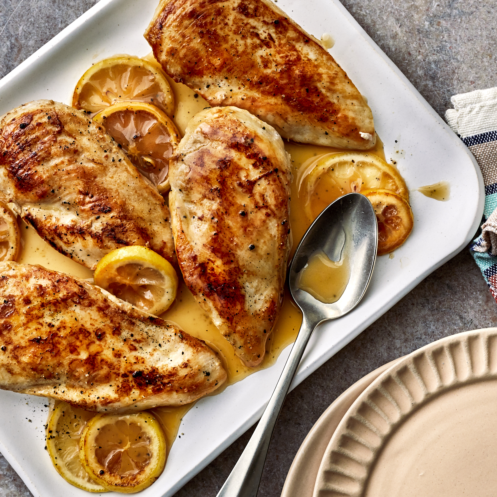

Baked Lemon-Pepper Chicken
Looking for a quick, easy dinner? This baked lemon-pepper chicken recipe is it. Chicken breasts are cooked in a skillet, then finished in the oven with lemon slices that soften and become part of the sauce, with a touch of maple syrup and butter to carry the flavor. It's so simple and delicious, you'll be making this healthy dinner again and again.
Ingredients:
- 4 (6 ounce) boneless, skinless chicken breasts
- ½ teaspoon salt, plus 1/8 teaspoon, divided
- 1 tablespoon extra-virgin olive oil
- 1 medium lemon, thinly sliced
- 2 tablespoons lemon juice
- 1 tablespoon pure maple syrup
- 2 tablespoons unsalted butter, cut into pieces
- 1 teaspoon cracked pepper
- Preheat oven to 425 degrees F.
- Sprinkle chicken evenly with 1/2 teaspoon salt. Heat oil in a large ovenproof skillet over medium-high heat. Add the chicken; cook, undisturbed, until the underside is golden brown, about 4 minutes. Flip the chicken; arrange lemon slices around the chicken in the pan.
- Transfer the skillet to the oven; bake until an instant-read thermometer inserted into the thickest portion of meat registers 165 degrees F, about 10 minutes.
- Transfer the chicken to a platter. Add lemon juice and maple syrup to the pan. Add butter, 1 piece at a time, stirring until it melts into the sauce. Stir in pepper and the remaining 1/8 teaspoon salt. Drizzle the sauce over the chicken.